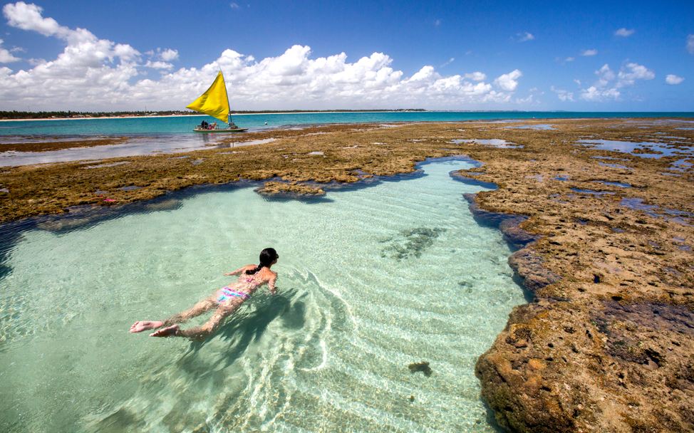

Ah… o verão! Época de calor, alegria e… férias! E nada melhor do que viajar nas férias de verão, não é mesmo?
A pausa das férias é fundamental para a nossa saúde, pois ela ajuda a recarregar as energias, aliviar o estresse e, também, a aumentar a disposição para a volta ao trabalho.
Infelizmente, muita gente está deixando as férias e o descanso de lado por vários motivos – seja pelo acúmulo de trabalho, a falta de planejamento ou mesmo um orçamento limitado.
Não é à toa que cada vez mais pessoas estão desenvolvendo a síndrome de Burnout (estafa emocional ligada ao trabalho excessivo), que é um dos resultados de uma vida corrida, estressante e sem pausa.
Por isso, é fundamental que você pare um pouco e tenha momentos relaxantes, seu corpo e sua mente irão agradecer agora e ao longo do ano.
Mas por que viajar nas férias de verão?
Viajar sempre é uma experiência transformadora. E no verão tudo fica ainda melhor – mais dias de sol, menos roupas para levar na mala, mais pessoas felizes em todos os lugares!
Descobrir novos lugares (ou revisitar destinos já conhecidos que têm um significado especial) pode fazer coisas incríveis pela sua saúde, para a sua família, para o seu relacionamento e até para a sua vida profissional.
É época de desacelerar
Trabalho, escola, atividades e compromissos ocupam tanto tempo que você pode estar desejando se desconectar dessa vida agitada e se reconectar com quem você ama!
Todos nós temos que concordar que a palavra ‘verão’ é quase sinônimo de férias, mesmo que isso signifique apenas não ter que acordar cedo. Há uma razão pela qual as férias de verão no trabalho são procuradas – o verão é aquele momento tradicional para fugir e relaxar.
Corra para a praia
“Vê a linha onde o céu encontra o mar? Ele me chama.” Temos que concordar com Moana que existe algo mágico no mar, não é mesmo? As praias são os lugares perfeitos para estar durante os meses de verão, seja para relaxar em banhos de sol ou praticar esportes aquáticos e passeios de barco.
Aproveite as noites de verão
O verão traz dias mais longos e mais luz solar! Você não sente que tem mais energia nesses dias? Dias mais longos também trazem mais horas de operação em destinos turísticos, o que também significa que mais lugares bacanas estão abertos. Mais restaurantes, mais passeios, mais de tudo! E o que é melhor do que relaxar no final de um longo dia de verão para aproveitar uma bela noite de verão?
Menos bagagem
Se você já viajou durante uma semana no verão e uma semana no inverno, sabe exatamente o que queremos dizer. A bagagem para o tempo mais frio parece dobrar o tamanho ou o número de peças na mala! Mesmo aqueles casacos de inverno que enrolam ou dobram ocupam mais espaço do que três roupas de banho. Menos bagagem é mais alegria!
Direto para piscina
Não gosta de praia? Tudo bem, use a piscina do hotel! Poder relaxar e se refrescar em uma piscina no verão é algo que ninguém recusa. Você também pode visitar muitos parques aquáticos no verão, o que é excelente para toda a família! Afinal, que criança olha para um parque aquático e diz: “Eu não quero ir lá”?
Viajar no verão também traz muitos outros benefícios para o corpo e a mente, como:
• Reduz o estresse
• Diminui o risco de doença cardíaca
• Aumenta a criatividade
• Ajuda na prática de atividade física
E o verão é uma ótima maneira de aproveitar para relaxar e tirar férias, seja sozinho, com a família ou amigos.
5 ideias de destinos para suas viagens
1. Porto Seguro, Bahia
Um dos destinos de férias de verão mais buscados da Bahia, Porto Seguro dispõe de muito agito e excelentes praias. Entre os destaques estão a Praia de Taperapuan, onde está o famoso complexo de lazer Tôa Tôa, a Praia do Mundaí, localizada no Centro, e a Praia do Espelho, localizada no distrito de Trancoso.
2. Porto de Galinhas, Pernambuco

Praia mais conhecida da cidade de Ipojuca, em Pernambuco, Porto de Galinhas é cheia de piscinas naturais com águas cristalinas e transparentes, ideais para mergulhar e ver peixinhos coloridos que fazem tanto a alegria das crianças. No verão não deixe de ir aos bares e restaurantes, que são bastante animados durante a noite.
3. Natal, Rio Grande do Norte
Viaje no verão para a capital do Rio Grande do Norte. Natal é conhecida pelas suas praias e dezenas de atrações. O lugar favorito dos locais e dos viajantes é com certeza a Praia de Ponta Negra, ideal para relaxar e curtir o calor. Confira também os passeios de buggy pelas dunas de Genipabu, a Vila de Pipa ou mesmo aos Parrachos de Maracajaú. Por lá não falta diversão para toda a família!
4. Grécia
Dona da capital mais antiga da Europa, a Grécia é um lugar repleto de história, arte e paisagens paradisíacas. Além disso, é o país da União Europeia com a menor taxa de suicídio, o que indica que além de ser indispensável conhecer a turismo, também é ótima para se viver.
É lá que você poderá apreciar um pôr do sol magnífico, que se estende pelo mar forma um efeito com cores únicas. É lá também que você observará casas brancas com portas e janelas coloridas, um charme do país.
Berço da democracia e dos Jogos Olímpicos, a Grécia tem muita história e cultura para oferecer. São inúmeros museus, teatros, lugares considerados Patrimônio Mundial pela Unesco, arquitetura e monumentos que remontam à mitologia grega, entre outros.
Em uma viagem para este país não faltará o que fazer. Além disso, você pode unir passeios para a Grécia e a Itália em um mesmo roteiro!
5. Punta del Este, Uruguai
Cidade repleta de viajantes no verão, Punta é um lugar cheio de lindas casas e jardins. É ideal para quem gosta de praia e diversão. Na região, você poderá se divertir em iates e cruzar com lobos-marinhos, que vão para lá em busca de alimento, curtir uma viagem de lua de mel em resorts ou mesmo viajar com sua família para aproveitar o verão uruguaio.